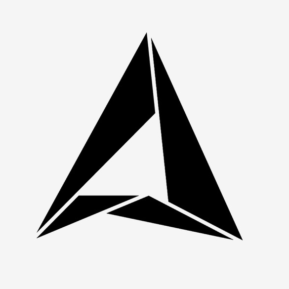

Rahul Sharma

 Chairman, BMSCE IEEE Student Branch
Chairman, BMSCE IEEE Student Branch
March 2014 – April 2015
Led a team of 250+ active IEEE members, taking initiatives in bringing engineering closer to the students by the means of workshops and colloquiums. Started Special Interest Groups (SIGs) in varied disciplines (viz. Python, Microcontrollers, Aeromodelling) to help them nurture their passion for technology.
President, ISA-BMSCE Section
March 2015 – April 2016
The International Society of Automation (ISA) is a leading non-profit organization that sets the standards for
automation globally. My role includes taking initiatives in bridging the gap between academia and industry along with creating awareness regarding ISA standards and protocols.
Founder, BMSCE Pentagram
October 2012
Pentagram, the Mathematics Society of BMSCE, was founded to inculcate and promote higher mathematics among the students and give them a common platform to share their knowledge, from both inside and outside the curriculum. Organizing inter-collegiate competitions, talks and workshops to promote the love for numb3rs!
 Student Placement Coordinator, BMSCE
Student Placement Coordinator, BMSCE
July 2015 – May 2016
Responsible for facilitating on-campus placements/career fairs, liaising between academic bodies and companies
concerning employment opportunities for students.
Awards & Accolades
Awarded the International Society of Automation (ISA) Outstanding Section Leader of the Year for exceptional contributions toward the automation and instrumentation community, Louisville, USA, 2015.
Awarded the Best Student Member in ISA Bangalore Section, 2016.
Awarded the Outstanding Student Volunteer in IEEE Bangalore Section, 2015.
Represented IEEE Bangalore Section at the IEEE Region 10 (Asia-Pacific) Congress, Colombo, Sri Lanka, 2015.
IEEE Member Geographic Activities' MGM award for leadership and recruitment efforts, 2015.